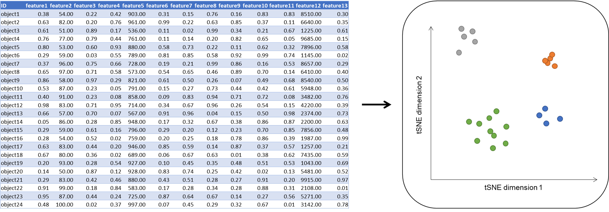
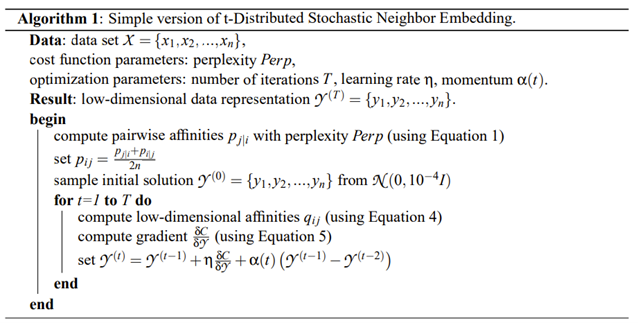

Interested? Contact muehlhaus@bio.uni-kl.de or venn@bio.uni-kl.de
-
tSNE is a dimensionality reduction method. It allows you to visualise a multi-dimensional dataset in 2 or 3 dimensional scatter plot.
But what does that mean in practice? Imagine you measured height, weight, width, density, brightness, as well as magnetic, chemical,
and physical properties of a bunch of objects. The simplest technique to summarize your measurements is a spreadsheet table in which each
row represents an element, and each column represents a measured feature:
objectA |
2 |
30 |
3 |
2 |
200 |
100000 |
... |
objectB |
4 |
50 |
2 |
3 |
255 |
130000 |
... |
objectC |
15 |
20 |
1 |
2 |
11 |
10000000 |
... |
... |
... |
... |
... |
... |
... |
... |
... |
-
Note that the measured features span multiple orders of magnitude. A change of 1 in height for example has much more value than a change
of 1 regarding the magnetic field. If now clusters of similar behaving objects should be identified, you are limited to inspect the data set
column-wise by repetitive sorting. Just from the table you cannot create a meaningful graph, that allows you to perform a visual inspection of all features at once.
Like principal component analysis (PCA), tSNE is a method for dimensionality reduction. It aggregates all features to a feature subset that
allows a visual inspection of the complex data. It often is applied in image processing, NLP, genomic data, and speech processing.

Fig. 1: Idea of tSNE. Visualisation of a high dimensional data on a 2-dimensional scatter plot.
- Blog post introducing the method, its applications, and limitations.
- Implement t-Distributed Stochastic Neighbour Embedding in FSharp.Stats.

- Read the publication and visit further introduction material you can find below (References)
#r "nuget: FSharp.Stats, 0.4.1"
#r "nuget: Plotly.NET, 2.0.0-beta9"
open FSharp.Stats
open Plotly.NET
let fromFileWithSep (separator:char) (filePath) =
// The function is implemented using a sequence expression
seq { let sr = System.IO.File.OpenText(filePath)
while not sr.EndOfStream do
let line = sr.ReadLine()
let words = line.Split separator//[|',';' ';'\t'|]
yield words }
let lables,data =
fromFileWithSep ',' (__SOURCE_DIRECTORY__ + "../content/irisData.csv")
|> Seq.skip 1
|> Seq.map (fun arr -> arr.[4], [| float arr.[0]; float arr.[1]; float arr.[2]; float arr.[3]; |])
|> Seq.toArray
|> Array.shuffleFisherYates
|> Array.mapi (fun i (lable,data) -> sprintf "%s_%i" lable i, data)
|> Array.unzip
// defines a normal distribuiton with mean = 3 and stDev = 2
let normalDist = Distributions.Continuous.normal 3. 2.
let createInitialGuess n = Array.init n (fun x -> normalDist.Sample())
// see FSharp.Stats documentation for probability distributions in the first code block for details
// https://fslab.org/FSharp.Stats/Distributions.html#Normal-distribution)
- Recursively loop from t=1 to T (number of iterations)
- calculate low dimensional affinities (qij (Equation 4)) for all low dimensional result vectors from 3rd step. Collect results in a matrix (n x n).
- compute gradient (Equation 5)
- calculate the updated result y(t) and repeat.
- report y(T) as final result
- Use a 2D and 3D scatter plot from Plotly.NET to visualize your result.
- Apply tSNE to a dataset of your choice.
- optional: Test your results against implementations in R/Python or in the best case against the datasets proposed in the original publication.
- Don’t forget to describe the limits/weaknesses of the approach in your blog post.
- How to handle/preprocess ties?
- optional: Compare the method to PCA.
Multiple items
namespace FSharp
--------------------
namespace Microsoft.FSharp
namespace FSharp.Stats
namespace Plotly
namespace Plotly.NET
val fromFileWithSep : separator:char -> filePath:string -> seq<string []>
val separator : char
Multiple items
val char : value:'T -> char (requires member op_Explicit)
<summary>Converts the argument to character. Numeric inputs are converted according to the UTF-16
encoding for characters. String inputs must be exactly one character long. For other
input types the operation requires an appropriate static conversion method on the input type.</summary>
<param name="value">The input value.</param>
<returns>The converted char.</returns>
--------------------
[<Struct>]
type char = System.Char
<summary>An abbreviation for the CLI type <see cref="T:System.Char" />.</summary>
<category>Basic Types</category>
val filePath : string
Multiple items
val seq : sequence:seq<'T> -> seq<'T>
<summary>Builds a sequence using sequence expression syntax</summary>
<param name="sequence">The input sequence.</param>
<returns>The result sequence.</returns>
--------------------
type seq<'T> = System.Collections.Generic.IEnumerable<'T>
<summary>An abbreviation for the CLI type <see cref="T:System.Collections.Generic.IEnumerable`1" /></summary>
<remarks>
See the <see cref="T:Microsoft.FSharp.Collections.SeqModule" /> module for further operations related to sequences.
See also <a href="https://docs.microsoft.com/dotnet/fsharp/language-reference/sequences">F# Language Guide - Sequences</a>.
</remarks>
val sr : System.IO.StreamReader
namespace System
namespace System.IO
type File =
static member AppendAllLines : path: string * contents: IEnumerable<string> -> unit + 1 overload
static member AppendAllLinesAsync : path: string * contents: IEnumerable<string> * encoding: Encoding *?cancellationToken: CancellationToken -> Task + 1 overload
static member AppendAllText : path: string * contents: string -> unit + 1 overload
static member AppendAllTextAsync : path: string * contents: string * encoding: Encoding *?cancellationToken: CancellationToken -> Task + 1 overload
static member AppendText : path: string -> StreamWriter
static member Copy : sourceFileName: string * destFileName: string -> unit + 1 overload
static member Create : path: string -> FileStream + 2 overloads
static member CreateText : path: string -> StreamWriter
static member Decrypt : path: string -> unit
static member Delete : path: string -> unit
...
<summary>Provides static methods for the creation, copying, deletion, moving, and opening of a single file, and aids in the creation of <see cref="T:System.IO.FileStream" /> objects.</summary>
System.IO.File.OpenText(path: string) : System.IO.StreamReader
val not : value:bool -> bool
<summary>Negate a logical value. Not True equals False and not False equals True</summary>
<param name="value">The value to negate.</param>
<returns>The result of the negation.</returns>
property System.IO.StreamReader.EndOfStream: bool with get
<summary>Gets a value that indicates whether the current stream position is at the end of the stream.</summary>
<exception cref="T:System.ObjectDisposedException">The underlying stream has been disposed.</exception>
<returns><see langword="true" /> if the current stream position is at the end of the stream; otherwise <see langword="false" />.</returns>
val line : string
System.IO.StreamReader.ReadLine() : string
val words : string []
System.String.Split([<System.ParamArray>] separator: char []) : string []
System.String.Split(separator: string [], options: System.StringSplitOptions) : string []
System.String.Split(separator: string,?options: System.StringSplitOptions) : string []
System.String.Split(separator: char [], options: System.StringSplitOptions) : string []
System.String.Split(separator: char [], count: int) : string []
System.String.Split(separator: char,?options: System.StringSplitOptions) : string []
System.String.Split(separator: string [], count: int, options: System.StringSplitOptions) : string []
System.String.Split(separator: string, count: int,?options: System.StringSplitOptions) : string []
System.String.Split(separator: char [], count: int, options: System.StringSplitOptions) : string []
System.String.Split(separator: char, count: int,?options: System.StringSplitOptions) : string []
val lables : string []
val data : float [] []
Multiple items
module Seq
from Plotly.NET
--------------------
module Seq
from FSharp.Stats
<summary>
Module to compute common statistical measure
</summary>
--------------------
module Seq
from Microsoft.FSharp.Collections
<summary>Contains operations for working with values of type <see cref="T:Microsoft.FSharp.Collections.seq`1" />.</summary>
val skip : count:int -> source:seq<'T> -> seq<'T>
<summary>Returns a sequence that skips N elements of the underlying sequence and then yields the
remaining elements of the sequence.</summary>
<param name="count">The number of items to skip.</param>
<param name="source">The input sequence.</param>
<returns>The result sequence.</returns>
<exception cref="T:System.ArgumentNullException">Thrown when the input sequence is null.</exception>
<exception cref="T:System.InvalidOperationException">Thrown when count exceeds the number of elements
in the sequence.</exception>
val map : mapping:('T -> 'U) -> source:seq<'T> -> seq<'U>
<summary>Builds a new collection whose elements are the results of applying the given function
to each of the elements of the collection. The given function will be applied
as elements are demanded using the <c>MoveNext</c> method on enumerators retrieved from the
object.</summary>
<remarks>The returned sequence may be passed between threads safely. However,
individual IEnumerator values generated from the returned sequence should not be accessed concurrently.</remarks>
<param name="mapping">A function to transform items from the input sequence.</param>
<param name="source">The input sequence.</param>
<returns>The result sequence.</returns>
<exception cref="T:System.ArgumentNullException">Thrown when the input sequence is null.</exception>
val arr : string []
Multiple items
val float : value:'T -> float (requires member op_Explicit)
<summary>Converts the argument to 64-bit float. This is a direct conversion for all
primitive numeric types. For strings, the input is converted using <c>Double.Parse()</c>
with InvariantCulture settings. Otherwise the operation requires an appropriate
static conversion method on the input type.</summary>
<param name="value">The input value.</param>
<returns>The converted float</returns>
--------------------
[<Struct>]
type float = System.Double
<summary>An abbreviation for the CLI type <see cref="T:System.Double" />.</summary>
<category>Basic Types</category>
--------------------
type float<'Measure> =
float
<summary>The type of double-precision floating point numbers, annotated with a unit of measure.
The unit of measure is erased in compiled code and when values of this type
are analyzed using reflection. The type is representationally equivalent to
<see cref="T:System.Double" />.</summary>
<category index="6">Basic Types with Units of Measure</category>
val toArray : source:seq<'T> -> 'T []
<summary>Builds an array from the given collection.</summary>
<param name="source">The input sequence.</param>
<returns>The result array.</returns>
<exception cref="T:System.ArgumentNullException">Thrown when the input sequence is null.</exception>
Multiple items
module Array
from FSharp.Stats
<summary>
Module to compute common statistical measure on array
</summary>
--------------------
module Array
from Microsoft.FSharp.Collections
<summary>Contains operations for working with arrays.</summary>
<remarks>
See also <a href="https://docs.microsoft.com/dotnet/fsharp/language-reference/arrays">F# Language Guide - Arrays</a>.
</remarks>
val shuffleFisherYates : arr:'b [] -> 'b []
<summary>
Shuffels the input array (method: Fisher-Yates)
</summary>
val mapi : mapping:(int -> 'T -> 'U) -> array:'T [] -> 'U []
<summary>Builds a new array whose elements are the results of applying the given function
to each of the elements of the array. The integer index passed to the
function indicates the index of element being transformed.</summary>
<param name="mapping">The function to transform elements and their indices.</param>
<param name="array">The input array.</param>
<returns>The array of transformed elements.</returns>
<exception cref="T:System.ArgumentNullException">Thrown when the input array is null.</exception>
val i : int
val lable : string
val data : float []
val sprintf : format:Printf.StringFormat<'T> -> 'T
<summary>Print to a string using the given format.</summary>
<param name="format">The formatter.</param>
<returns>The formatted result.</returns>
val unzip : array:('T1 * 'T2) [] -> 'T1 [] * 'T2 []
<summary>Splits an array of pairs into two arrays.</summary>
<param name="array">The input array.</param>
<returns>The two arrays.</returns>
<exception cref="T:System.ArgumentNullException">Thrown when the input array is null.</exception>
val normalDist : Distributions.Distribution<float,float>
namespace FSharp.Stats.Distributions
module Continuous
from FSharp.Stats.Distributions
val normal : mu:float -> sigma:float -> Distributions.Distribution<float,float>
<summary>
Initializes a Normal distribution
</summary>
val createInitialGuess : n:int -> float []
val n : int
val init : count:int -> initializer:(int -> 'T) -> 'T []
<summary>Creates an array given the dimension and a generator function to compute the elements.</summary>
<param name="count">The number of elements to initialize.</param>
<param name="initializer">The function to generate the initial values for each index.</param>
<returns>The created array.</returns>
<exception cref="T:System.ArgumentException">Thrown when count is negative.</exception>
val x : int
abstract member Distributions.Distribution.Sample : unit -> 'b